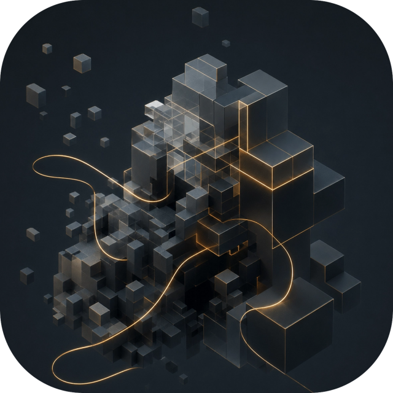
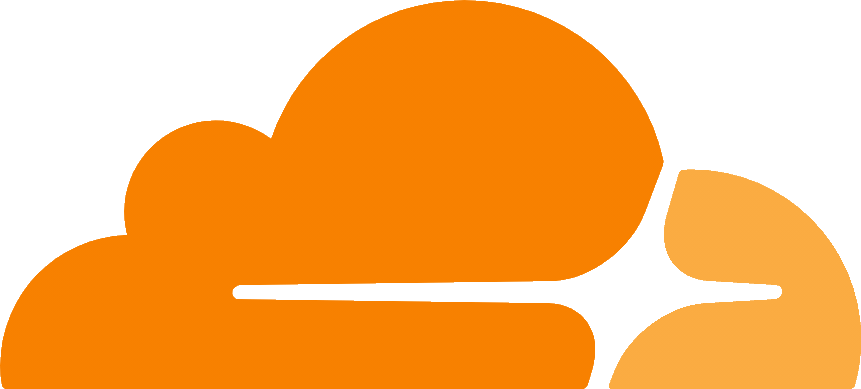
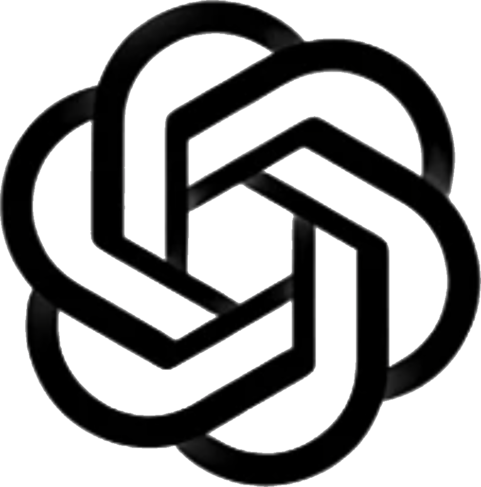
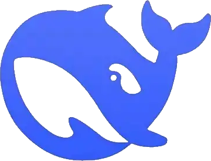
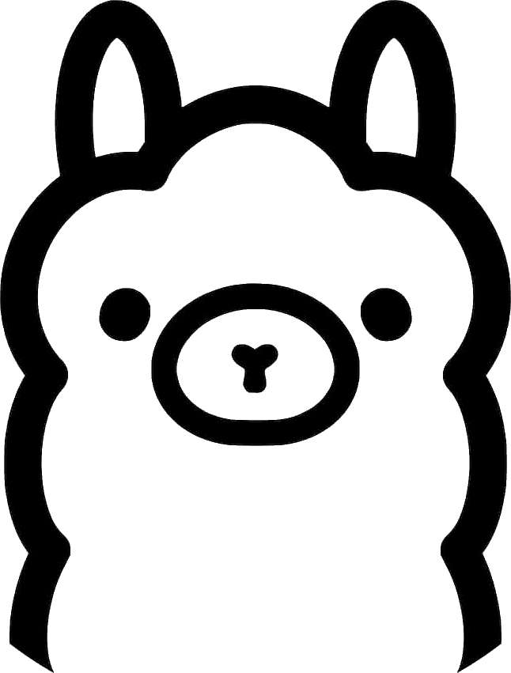
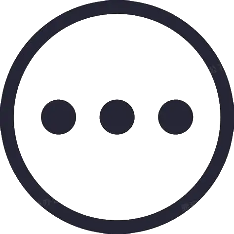

管理服务器有多头疼？
- 翻半天 Wiki 才能找到一条指令
- 背指令背到怀疑人生
- 每次调权限都要查文档
- 装个新插件又得重新学
如果...这些都能用一句话解决呢？

用说人话的方式管理你的 Minecraft 服务器
如果...这些都能用一句话解决呢？
支持 exit 退出 · stop 打断 · /cli retry 重试
按需选择，从全手动到全自动
不绑死一家，想用哪个用哪个





找文档？AI 帮你搞定
为 AI 注入特定领域的知识和技能
持久化记忆，越用越顺手
NORMAL 全程确认 · YOLO 只拦高危
AI 也会犯错，FancyHelper 兜底
连续相似调用自动拦截 · 执行结果回传 · 错了自己改
AI 在做什么，随时可见
用说人话的方式管理你的 Minecraft 服务器
下载 · 安装 · 开用